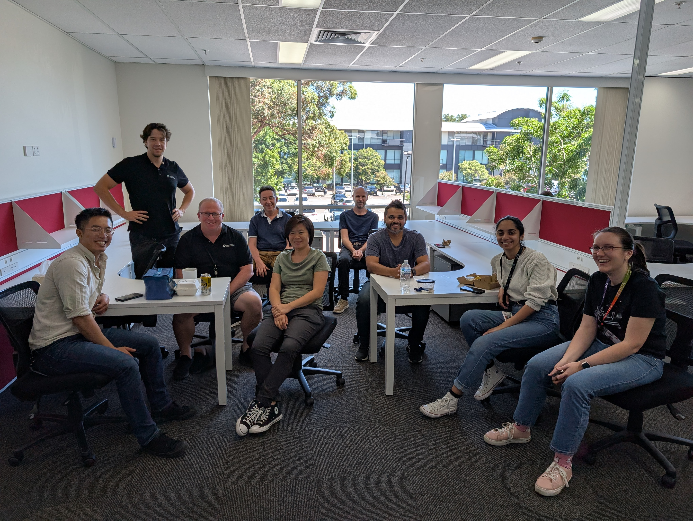
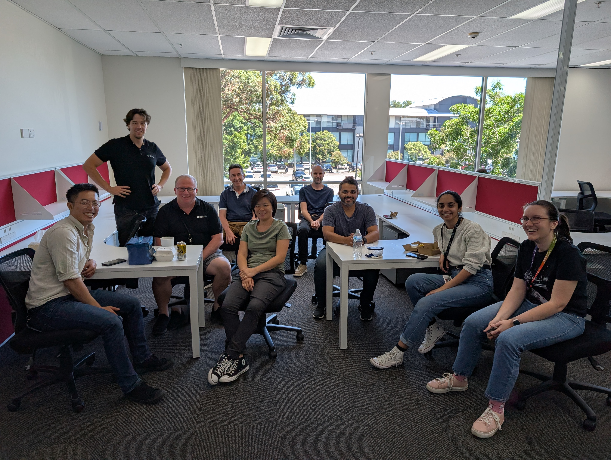

I didn’t begin my professional journey in engineering, I started behind a bar. Bartending taught me more than how to mix a good drink, it gave me my first lessons in communication, teamwork, and relationship building. When you connect with the people around you, work becomes more fulfilling, collaboration flows naturally, and challenges become easier to overcome.
When I transitioned into engineering, these interpersonal skills became my biggest advantage. My first large milestone was at Atlantic & Peninsula, where I worked as a mechanical engineering intern responsible for maintaining naval ships. Here I developed time management, stakeholder communication, and a disciplined approach to mechanical systems. I began to understand that engineering was not just about solving technical problems, it was also about managing complexity, people, and processes in high-stakes environments.
From there, I broadened my experience through multiple internships, from wind tunnel testing at Windtech to naval systems at Sofraco, each requiring me to adapt, learn, and grow in different directions. These roles gave me a strong foundation in mechanical systems and organisational practices, but my most transformative experience came at Advanced Navigation.
At Advanced Navigation, I stepped into a role that blended mechanical, electrical, and embedded systems engineering. I designed custom jigs, developed production processes, repaired PCBs, and contributed to new product introductions. I found myself not only building hardware but also building processes, from technician training to production documentation, ensuring that products could move reliably from concept to manufacture.
What surprised me most was how much self-learning professional engineering demands. Every project brought something unfamiliar, new tools, standards, or systems I had to quickly pick up. Over time, I built a mindset of problem-solving, adaptability, and continuous learning that now defines how I approach challenges.
Today, I see myself as a dependable and adaptable engineer with hands-on experience across mechanical, naval, and embedded systems engineering. I thrive on solving problems, learning new skills, and building strong relationships with the people I work with. My passions lie in creating technology that brings together hardware, electronics, and software in a way that is collaborative, reliable, and innovative.